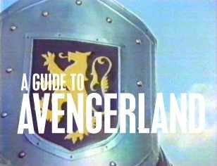
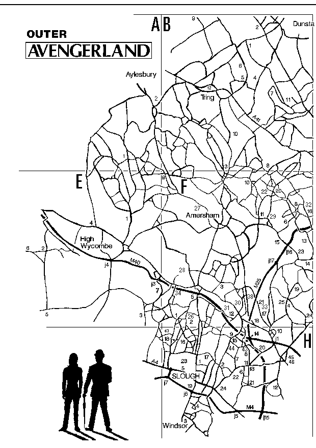

INTRODUCTIONWhat the guide is all about, and who has helped put it all together
WHAT'S NEW IN AVENGERLAND
News about the latest additions to the guide
HOW TO USE THE GUIDE
An introduction to the structure of the guide
INDEX TO SERIES - TV series in transmission order cross linked to locations featured in each episode
Avengerland Grid Numbers (see maps): A B C D E F G H I J K L M N O P Q R
ABOUT BRITAIN - A guide to locations outside the Avengerland area
ACTION CITY - A sister site featuring London locations
AVENGERLAND INTERNATIONAL - A steadily growing page of locations outside the UK
MAPS - Maps of Avengerland to give you an idea where the various areas are
THE AVENGERLAND STUDIO TOUR – A mixed bag of images of the studios that made the series
LOCATION SPOTTING PAGE - We are still looking for locations, visit this site and help in the search
LINKS - Links to various sites related to Avengerland and British TV location spotting
CREDITS AND THANKS - From 1999 when this online version started
We hope you enjoy the guide which is a service to all those who enjoy classic British television film series.
Remember that A GUIDE TO AVENGERLAND relies on the contributions and support of others.
Please help the guide by visiting the Location Spotting Page and contributing to the guide.
